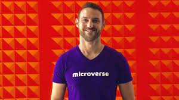

Ariel Camus

Ariel is the founder & CEO of Microverse, an online school for remote software developers.
About the Legend
Founder & CEO : Microverse (Jan 2018 - Present)
Microverse is an online school for remote software developers that doesn't charge students anything until they get hired. Students learn remotely and collaboratively with peers around the world, receive support from mentors and a team of professional coaches, and don't pay anything until they land life-changing jobs in software development.
Senior Product Manager: Lonely Planet (Nov 2013 - Dec 2017)
Francisco Bay AreaAriel joined Lonely Planet after the acquisition of TouristEye, the company he started in 2009 and brought to over 180 countries and more than 1 million users. Initially, he was the product manager of lonelyplanet.com, Lonely Planet's website with more than 150 million unique visitors per year. After that, he envisioned and managed Open Planet, an ecosystem of more than 25 different APIs and microservices that allow Lonely Planet's products and partners to easily integrate travel data.
Co-founder & CEO: Tourist Eye (Aug 2009 - Oct 2013)
Acquired by Lonely Planet in 2013. Created the product from scratch, first splitting his time between iOS development and business management and since 2011 focused completely on Product and Business Management. He led the fundraising efforts of the company in Europe and in the USA, raising over half a million dollars that were used to grow the team and take the product to over 1 million users in more than 180 countries.Education
Universidad Politécnica de Madrid Gráfico Universidad Politécnica de Madrid Universidad Politécnica de Madrid Master's DegreeTelecommunication engineering (~M.Sc. in EE & CE)2004 - 2009
Completed a 5-year master degree accredited by ABET -- Electronics, Communications and Telematics, Majoring in Networks and Communication Services.
Ariel is a bright and highly motivated individual that is always looking to improve things and empower the ones around him. He is always asking questions, seeking answers and very open to criticism and improvement. He's a very well-rounded individual, able to excel at anything he puts his hands on. From building world-class apps to leading a team, raising capital, killing on stage with his pitches. Anything and everything. As a team member and friend, he is super fun to be around. He is always looking for great jokes to tell everybody and keeps a relaxed and friendly atmosphere within the people around him. Plus, he is always planning fun things so it's highly unlikely that you will get bored with him. Let me say this very clearly: you don't want to miss any chance you have to work and be around Ariel......"Fran Sevillano"
For more information, click here
Ariel Camus on Linkedin
Developed by Amit Lohan and Masouma © copyright(not taken yet)
Developed by Amit Lohan and Masouma © copyright(not taken yet)